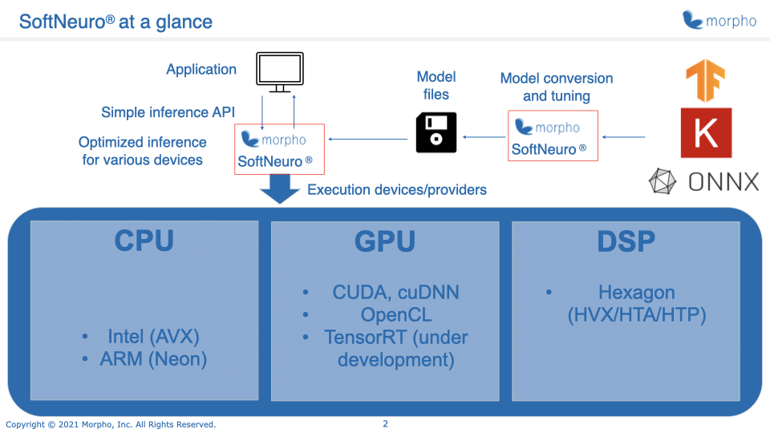

SoftNeuro Overview
SoftNeuro is a Software Neural Inference Engine for high-speed neural inference using pretrained neural networks on
a variety of platforms.
It supports a variety of platforms including Intel CPU, ARM CPU, Qualcomm DSP (HNN), NVIDIA GPU (CUDA), and other GPUs (OpenCL).
By choosing the optimal processing techniques for each platform, SoftNeuro achieves high inference speeds on multiple platforms.
We are also working on expanding support to include more platforms.

Models trained using mainstream machine learning frameworks are first converted to the DNN format that is used by SoftNeuro and then used for inference with SoftNeuro.
The current model conversion tool supports model formats used by TensorFlow, Keras and ONNX.
You can also use models from PyTorch, Chainer, Microsoft Cognitive Toolkit, MXNet, PaddlePaddle etc., by converting them first to ONNX format and then to DNN format.
Further, Layer fusion and other graph optimization techniques are applied during model conversion to optimize for speed.

The CLI tool supports not only the essential features (model conversion and inference),
but also additional features as listed below.
Please refer to the CLI Tool Manual for details.
- Retrieval of various measurement data during inference (processing time, memory consumption etc.)
- export the optimal settings for a given model for inference in the target environment
- protection of model architecture details and weights using encryption